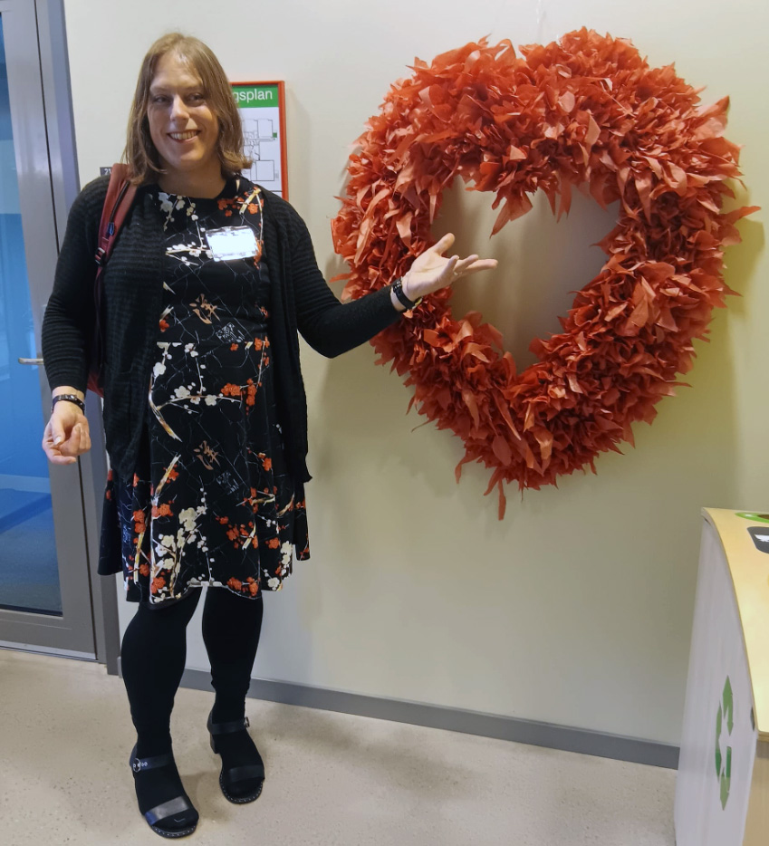

Malinda Lindmark

Sammanfattning
Jag är en flitig och kreativ person med erfarenhet av att undervisa media och programmering.
Utbildning
Jag har en fil.kand. inom medie- och kommunikationsvetenskap, samt en lärarexamen.
Arbetslivserfarenhet
Programmeringslärare - NTI Gymnasiet Kronhus
Nuvarande anställning sedan januari 2024.
Planerar, genomför och utvärderar undervisningen.
Mentorskap från och med HT2024.
Medialärare - Klara Teoretiska Gymnasium
januari 2022 - januari 2024.
Planerar, genomför och utvärderar undervisningen.
Ansvar för skolans mediaförråd, kameror med mera.
Färdigheter
Programmering ⭐️⭐️⭐️⭐️⭐️
Grafisk design ⭐️⭐️⭐️⭐️⭐️
UX-design ⭐️⭐️⭐️⭐️⭐️
Övrigt
Mina intressen
Kontakta mig